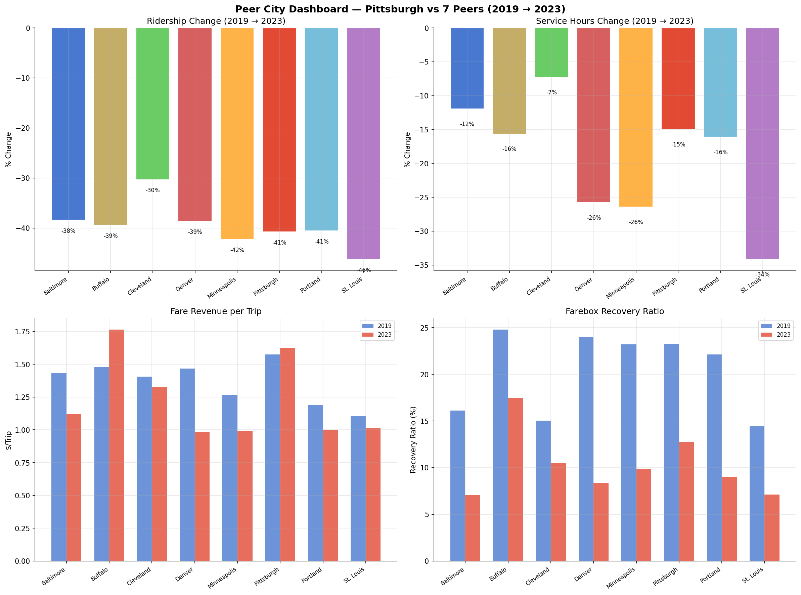
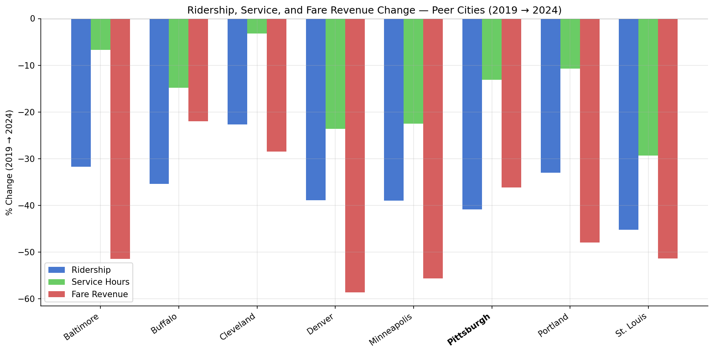
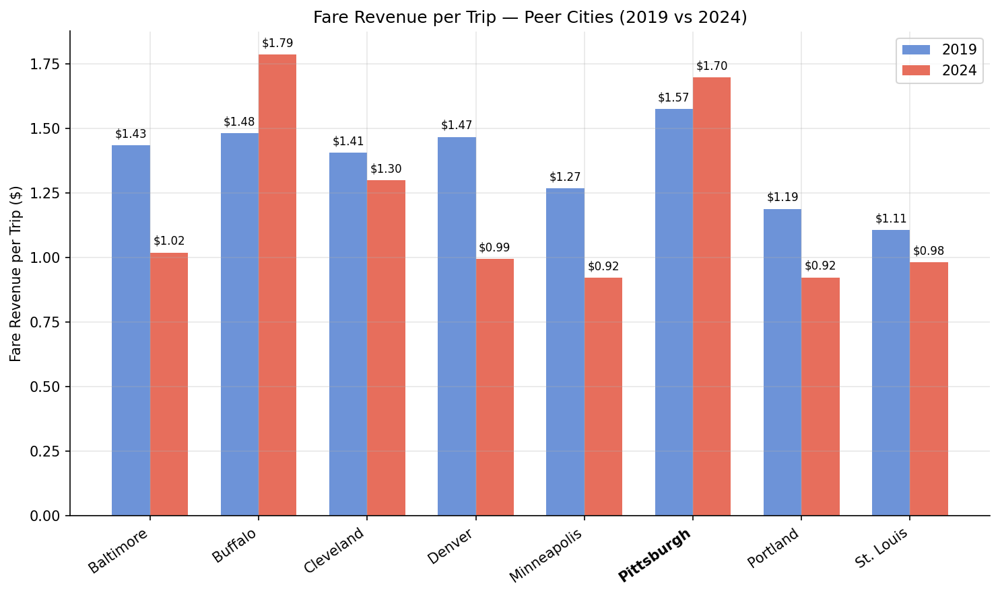
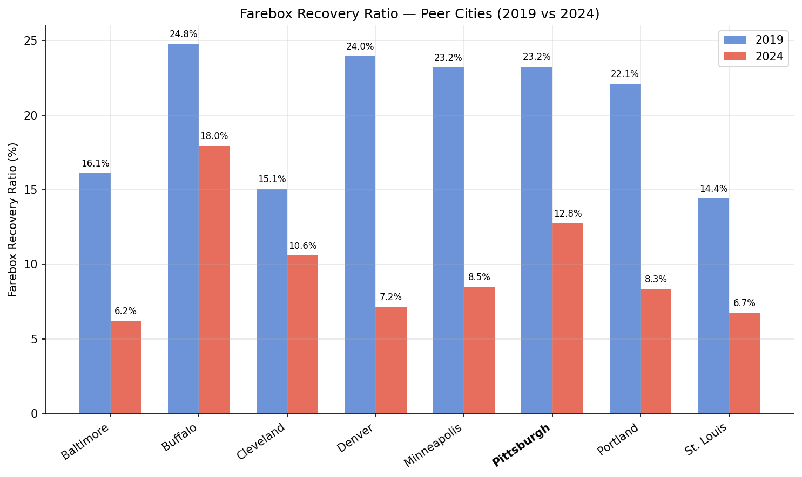
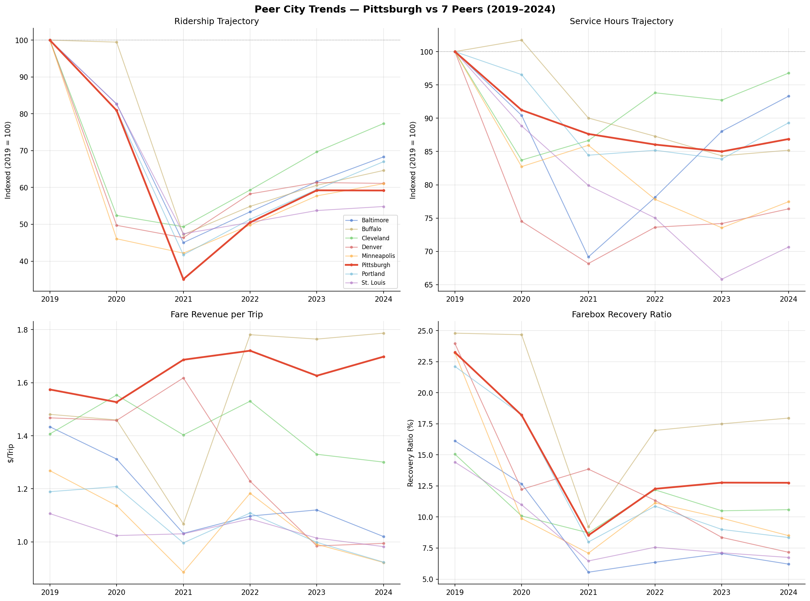

Analysis
40 - Peer City Dashboard
Equity and Strategic Planning
Coverage: Coverage window unavailable for this page.
Built 2026-06-15 11:52 UTC · Commit e5cf673
Page Navigation
Analysis Navigation
Data Provenance
flowchart LR
40_peer_city_dashboard(["40 - Peer City Dashboard"])
t_ntd_annual_service[("ntd_annual_service")] --> 40_peer_city_dashboard
06_ntd_service[["NTD Annual Service ETL"]] --> t_ntd_annual_service
u1_06_ntd_service[/"data/ntd-annual-service/2023_TS2.2_Service_Data.xlsx"/] --> 06_ntd_service
d1_40_peer_city_dashboard(("polars (lib)")) --> 40_peer_city_dashboard
d2_40_peer_city_dashboard(("numpy (lib)")) --> 40_peer_city_dashboard
classDef page fill:#dbeafe,stroke:#1d4ed8,color:#1e3a8a,stroke-width:2px;
classDef table fill:#ecfeff,stroke:#0e7490,color:#164e63;
classDef dep fill:#fff7ed,stroke:#c2410c,color:#7c2d12,stroke-dasharray: 4 2;
classDef file fill:#eef2ff,stroke:#6366f1,color:#3730a3;
classDef api fill:#f0fdf4,stroke:#16a34a,color:#14532d;
classDef pipeline fill:#f5f3ff,stroke:#7c3aed,color:#4c1d95;
class 40_peer_city_dashboard page;
class t_ntd_annual_service table;
class d1_40_peer_city_dashboard,d2_40_peer_city_dashboard dep;
class u1_06_ntd_service file;
class 06_ntd_service pipeline;
Findings
Findings: Peer City Dashboard
Key findings
Pittsburgh's ridership loss (-40.8%) is near the peer median. All 8 cities lost 23–45% of riders between 2019 and 2024. Cleveland fared best (-22.6%), St. Louis worst (-45.2%). Pittsburgh's loss is among the steepest.
Service cuts (-13.1%) are mid-range. PRT's 13% reduction in vehicle revenue hours is comparable to Portland (-10.7%) and Buffalo (-14.8%). Denver (-23.6%), Minneapolis (-22.5%), and St. Louis (-29.3%) cut far more deeply. Cleveland cut the least (-3.2%).
Pittsburgh is the only peer city where fare revenue per trip increased. PRT's effective fare rose from $1.57 to $1.70 per trip (+8.3%), while every other peer saw fare-per-trip decline — some sharply (Minneapolis $1.27→$0.92, Portland $1.19→$0.92). This likely reflects peer cities adopting reduced-fare programs or fare-free experiments during and after the pandemic, while PRT maintained its fare structure.
Farebox recovery collapsed everywhere, but Pittsburgh retained a relative advantage. PRT's farebox recovery ratio fell from 23.2% to 12.8%, but this is the second-highest among peers (after Buffalo at 18.0%). Denver dropped from 24.0% to 7.2%, and Baltimore from 16.1% to 6.2%.
Fare revenue fell less steeply at PRT (-36.2%) than at most peers despite comparable ridership losses. Baltimore (-51.4%), Denver (-58.6%), Minneapolis (-55.6%), Portland (-48.0%), and St. Louis (-51.3%) all lost about half their fare revenue. This is consistent with PRT maintaining fare levels while peers discounted.
Limitations
- No reliability data. The NTD does not collect on-time performance; peer reliability comparisons are not possible with public data.
- Fare revenue is not the same as fare price. NTD reports total fare revenue, not fare schedules. A city that introduced fare-free service would show lower fare-per-trip even if the base fare didn't change.
- System-level aggregation only. NTD data is agency-wide; we cannot break down by route, mode, or neighborhood.
Validation
- Data source verified. All metrics sourced from NTD TS2.2 workbook (
ntd_annual_servicetable:upt,vrh,fares,opexpcolumns). - Aggregates sanity-checked. PRT 2019 fare revenue ($100.8M) and operating expenses ($433.5M) are consistent with PRT's published financial reports.
- Direction of effects checked. All cities show ridership decline, service cuts, and fare revenue loss — consistent with known pandemic impacts on transit. No directional anomalies.
- Surprising result investigated. Pittsburgh's fare-per-trip increase is surprising but explained by PRT maintaining its fare structure while peers adopted discounts or fare-free programs. This is a real policy difference, not a data error.
Output

2x2 dashboard comparing ridership, service, fare per trip, and farebox recovery across 8 peer cities.

grouped bar chart showing percent change in ridership, service hours, and fare revenue per peer city.

paired bars comparing fare revenue per trip in 2019 vs 2024.

paired bars comparing farebox recovery ratio in 2019 vs 2024.

2x2 line chart showing annual trajectories for ridership, service hours, fare per trip, and farebox recovery from 2019 to 2024.
No interactive outputs declared.
full metrics table with raw values, percent changes, and derived ratios.
Preview CSV
Methods
Methods: Peer City Dashboard
Question
How does PRT compare to peer cities across ridership recovery, service supply, and fare burden — and do these dimensions tell a consistent story about Pittsburgh's post-pandemic transit trajectory?
Approach
- Pull 2019 and 2024 annual data for 8 peer cities from
ntd_annual_service. - Compute percent change (2019→2024) for ridership (UPT), service hours (VRH), and fare revenue.
- Compute derived metrics: fare per trip (
fares / upt), farebox recovery ratio (fares / opexp), and cost per trip (opexp / upt). - Visualize changes as grouped bars with Pittsburgh highlighted, and derived metrics as paired 2019-vs-2023 bars.
- Combine key views into a multi-panel dashboard figure.
Data
ntd_annual_service: columnsntd_id,year,upt,vrh,fares,opexp.- Filtered to
year IN (2019, 2024)and the 8 peer city NTD IDs defined inPEERS. - No null handling needed — all 8 peers have complete data for both years.
Output
output/peer_comparison.csv— full metrics table with raw values, percent changes, and derived ratios for all peers.output/peer_dashboard.png— 2×2 multi-panel figure: percent changes, fare per trip, farebox recovery, and cost per trip.output/indexed_change.png— grouped bar chart showing percent change in ridership, service hours, and fare revenue side-by-side per city.output/fare_per_trip.png— paired bars (2019 vs 2023) for fare revenue per unlinked trip.output/farebox_recovery.png— paired bars (2019 vs 2023) for farebox recovery ratio.
Source Code
|
Sources
| Name | Type | Why It Matters | Owner | Freshness | Caveat |
|---|---|---|---|---|---|
| ntd_annual_service | table | Primary analytical table used in this page's computations. | Produced by NTD Annual Service ETL. | Updated when the producing pipeline step is rerun. | Coverage depends on upstream source availability and ETL assumptions. |
Upstream sources (1)
|
|||||
| polars | dependency | Runtime dependency required for this page's pipeline or analysis code. | Open-source Python ecosystem maintainers. | Version pinned by project environment until dependency updates are applied. | Library updates may change behavior or defaults. |
| numpy | dependency | Runtime dependency required for this page's pipeline or analysis code. | Open-source Python ecosystem maintainers. | Version pinned by project environment until dependency updates are applied. | Library updates may change behavior or defaults. |